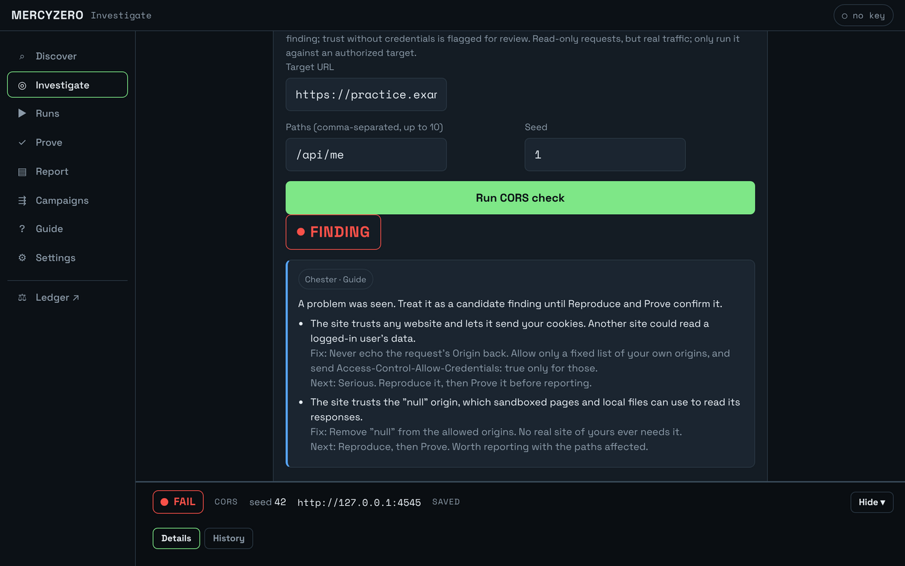
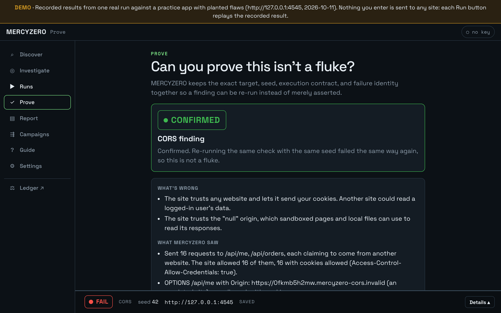
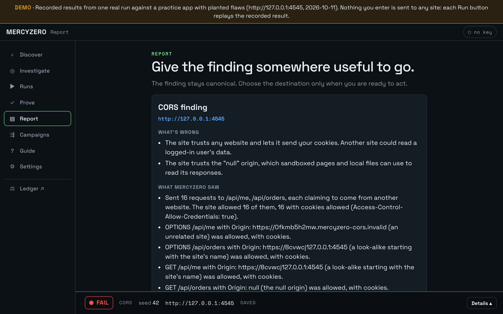
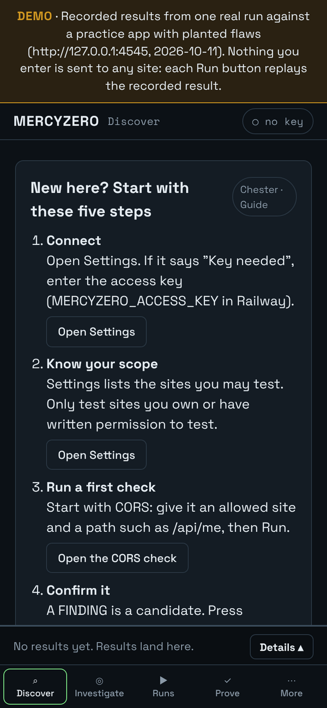

MERCYZERO
Deterministic security testing that proves its own findings.
The source code is private. A walkthrough is available on request.
Most security scanners hand you a list of warnings. MERCYZERO runs a seeded, repeatable check against a site you're allowed to test. A single component decides pass or fail, and then the result has to prove itself: replay it, shrink it, fingerprint it, and write it up with the evidence attached.
See it work
The demo replays one real run against a practice app with flaws planted on purpose. Every button works, and nothing you type is ever sent to a real site.




How it works
- 01Deterministic runseeded ledger + HTTP checks
- 02Adjudicatecant-touch-this: the sole judge
- 03Replaysame seed, same bytes
- 04Shrinkprefix-minimal failing case
- 05Fingerprintmatch regressions over time
- 06Lineage + digestcontent-hashed facts
- 07Advisoryread-only, never decides
| Engine | Seeded, repeatable checks: CORS, redirects, cookies, rate limits, IDOR, authorization, uploads, SSRF, hardening |
|---|---|
| cant-touch-this | The only component allowed to decide pass or fail |
| Evidence | Replay, shrink, fingerprint, and lineage, so a finding can be re-run instead of just asserted |
| Digest | Content-hashed facts that can't quietly change |
| Advisory | Read-only guidance. It can explain, but it never decides, and it takes no free-text input. |
| Server + console | Fastify API and a button-only web console that works on mobile |
| Chaos harness | Isolated database-branch environment, kept apart from the engine on purpose |
How it's verified
- 1,004 automated tests: 999 pass, 0 fail, and 5 more run in the database gate. Roughly half the codebase is tests.
- Real-browser tests on every screen. A headless Chromium run drives the whole console, including the demo.
- Architecture is enforced, not suggested. CI fails the build if a module imports something it isn't allowed to.
- Deploys only on green. Production ships only after the full gate passes: lockfile, architecture, contracts, build, unit tests, integration tests, and browser tests.
- The demo can't touch anything. Demo mode registers no live routes and refuses to start next to a database or access key. A test asserts zero network calls.
- Open risks are written down, each with a plan, instead of being left out.
Defects caught in live use
These came from using the deployed app as a real user would. All three are fixed and verified.
A check could change data on the sites it tested
A security tool must never modify its target. Found in live use and driven to a verified fix.
The report feature never worked
It had never produced a working report. Found by using it, then fixed and verified.
Docs didn't match the app
Caught documentation describing behavior the app didn't have, and had it corrected.
How it was built
Goal first. I set the outcome, steered conversational AI with my own two-layer prompting method, Goggles & Lens, and had it prove the code was coherent and did what I asked. AI agents handled a small share of the implementation. My job was the spec, the gates, and refusing to accept “it works” without proof.